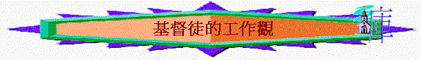

一.工作真理
「做這份工作很辛苦，要轉工…」
「沒有興趣，不做也吧！」
「能事奉神的工作比較屬靈些，我會選擇…」
1.工作原因
A.不變定律
「又對亞當說：你既聽從妻子的話，吃了我所吩咐你不可吃的那樹上的果子，地必為你的緣故受咒詛；你必終身勞苦才能從地裡得吃的。地必給你長出荊棘和蒺藜來；你也要吃田間的菜蔬。你必汗流滿面才得糊口，直到你歸了土，因為你是從土而出的。你本是塵土，仍要歸於塵土。」創3:17-19
〜人犯罪後，地受咒詛，人必須汗流滿面，才得糊口，這是不變的定律，神的旨意，信主的人更當順服，但到主回來的時候，我們就可得真正的安息。
B.聖經吩咐
「我們在你們那裡的時候，曾吩咐你們說，若有人不肯做工，就不可吃飯。」帖後3:10
C.為得糊口
「我們靠主耶穌基督吩咐、勸戒這樣的人，要安靜做工，吃自己的飯。」帖後3:12
D.管理使命
「神就賜福給他們，又對他們說：「要生養眾多，遍滿地面，治理這地，也要管理海裡的魚、空中的鳥，和地上各樣行動的活物。」」創1:28
〜即使沒有亞當犯罪，人仍要工作，是要好好管理神所創造的天地萬物。
E.不連累人
「你們自己原知道應當怎樣效法我們。因為我們在你們中間，未嘗不按規矩而行，也未嘗白吃人的飯，倒是辛苦勞碌，晝夜做工，免得叫你們一人受累。」帖後3:7-8
F.扶助別人
「從前偷竊的，不要再偷；總要勞力，親手做正經事，就可有餘分給那缺少的人。」弗4:28
「我凡事給你們作榜樣，叫你們知道應當這樣勞苦，扶助軟弱的人，又當記念主耶穌的話，說：『施比受更為有福。』」徒20:35
〜原來工作有一個崇高的目的，是要得更多，甚至有餘來扶助有需要的人。
G.事奉基督
「你們作僕人的，要懼怕戰兢，用誠實的心聽從你們肉身的主人，好像聽從基督一般。不要只在眼前事奉，像是討人喜歡的，要像基督的僕人，從心裡遵行神的旨意。甘心事奉，好像服事主，不像服事人。」弗6:5-7
H.見証真道
「不可私拿東西，要顯為忠誠，以致凡事尊榮我們救主神的道。」多2:10
2.注意事項
A.工作實在是勞苦的
「弟兄們，你們記念我們的辛苦勞碌，晝夜做工，傳神的福音給你們，免得叫你們一人受累。」帖前2:9
「也未嘗白吃人的飯，倒是辛苦勞碌，晝夜做工，免得叫你們一人受累。」帖後3:8
〜聖經明說人是要勞苦的，連保羅為不連累人，也要工作，他是辛苦勞碌，晝夜作工的，基督徒不可以因工作勞苦而逃避工作，也不應看那份工作辛不辛苦而為自己主要選擇工作的最重要因素。
B.工作過後要休息的
「天地萬物都造齊了。到第七日，神造物的工已經完畢，就在第七日歇了他一切的工，安息了。神賜福給第七日，定為聖日；因為在這日，神歇了他一切創造的工，就安息了。」創2:1-3
〜神的心意要人工作，但祂也想人安息的，祂期望人做了六日工作後，有一日安息，這安息是憑信心分別出來(賺少了一日)，是歸神的，是記念神的創造與拯救，也是休息日子，所以若一份工作，一星期中沒有一日，人可以分別出來歸神，記念神，享安息的日子，似乎違反了神創造的心意。
C.工作完後可享受的
「我知道世人，莫強如終身喜樂行善；並且人人吃喝，在他一切勞碌中享福，這也是神的恩賜。」傳3:12-13
〜人可以享受勞碌過後的成果，可以吃喝，歡樂，這是神的恩賜，但人若工作過程中，連享受的工夫也沒有了，只顧不息的作工，而缺少享受完成後的成果，此乎也不是神的心意。
D.選工上卻不絆倒人
「凡事都可行，但不都有益處。凡事都可行，但不都造就人。」林前10:23
「若有疑心而吃的，就必有罪，因為他吃不是出於信心。凡不出於信心的都是罪。」羅14:23
「給人行按手的禮，不可急促；不要在別人的罪上有分，要保守自己清潔。」提前5:22
〜如果某肢體選了某一份工作，令人絆倒或與公司、主人同流合污，或是在罪上有份，都是不合宜的。
E.工作上要留意承諾
「你們作僕人的，要凡事聽從你們肉身的主人，不要只在眼前事奉，像是討人喜歡的，總要存心誠實敬畏主。」西3:22
「各人蒙召的時候是什麼身分，仍要守住這身分。你是作奴隸蒙召的嗎？不要因此憂慮；若能以自由，就求自由更好。」林前7:20-21
〜我們要存誠實的心服事地上的主人，人在求工或與雇主的承諾中不可行詭詐，不可濫用自由而作一個沒有交帶，不守信用，胡亂轉工的基督徒。
F.可選更能事主之工
「又生了該隱的兄弟亞伯。亞伯是牧羊的；該隱是種地的。有一日，該隱拿地裡的出產為供物獻給耶和華；亞伯也將他羊群中頭生的和羊的脂油獻上。耶和華看中了亞伯和他的供物，只是看不中該隱和他的供物。該隱就大大的發怒，變了臉色。」創4:2-5
〜該隱選了種地工作，在未能吃肉的環境中，更能得糊口，但亞伯卻送上牧羊，羊長大後人不能吃，只能用羊皮作衣服，明顯亞伯選此行業不單是糊口，也為事奉，可以獻羊為祭事奉主。
〜人在選擇中，可有自由度選自己的工作，若覺此份工作更能事奉主，可以傳福音，可以星期六日能返教會敬拜神，有為主的心，神也悅納。
〜但信徒要留意，基本上，任何一行也能事奉主，服事地上主人如同服事主一樣，所以不要看輕自山所作的工，也是事奉神的。
G.沒工作仍要行善事
「因我們聽說，在你們中間有人不按規矩而行，什麼工都不做，反倒專管閒事。」帖後3:11
「弟兄們，你們行善不可喪志。」帖後3:13
「從前偷竊的，不要再偷；總要勞力，親手做正經事，就可有餘分給那缺少的人。」弗4:28
〜若信未能找到工作，不是虛渡光陰，專管閒事，反而要做正經事，可以行善，可以作義工，可以幫助其他人的。
二.工作態度
「你們作僕人的，要凡事聽從你們肉身的主人，不要只在眼前事奉，像是討人喜歡的，總要存心誠實敬畏主。無論做什麼，都要從心裡做，像是給主做的，不是給人做的，因你們知道從主那裡必得著基業為賞賜；你們所事奉的乃是主基督。那行不義的必受不義的報應；主並不偏待人。」西3:22-25
〜信徒雖有自由，但若仍是在別人家中成僕人，應仍要學習
1.凡事聽從
2.像事奉主
〜從心�塈@，像是給主作的
3.必得賞賜
〜行不義的必受不義的報應，但若在地上作好僕人的角式，像服事主一樣，必得獎賞
4.顯為忠誠
「勸僕人要順服自己的主人，凡事討他的喜歡，不可頂撞他，不可私拿東西，要顯為忠誠，以致凡事尊榮我們救主神的道。」多2:9-10
〜革哩底人喜歡偷盜，但信徒信了主後，卻不能，特別作為僕人，不可私拿東西，更要順服自己的主人，凡事討他喜歡，像討主喜悅一樣
5.討他喜悅
「勸僕人要順服自己的主人，凡事討他的喜歡，不可頂撞他，不可私拿東西，要顯為忠誠，以致凡事尊榮我們救主神的道。」多2:9-10
6.凡事忠心